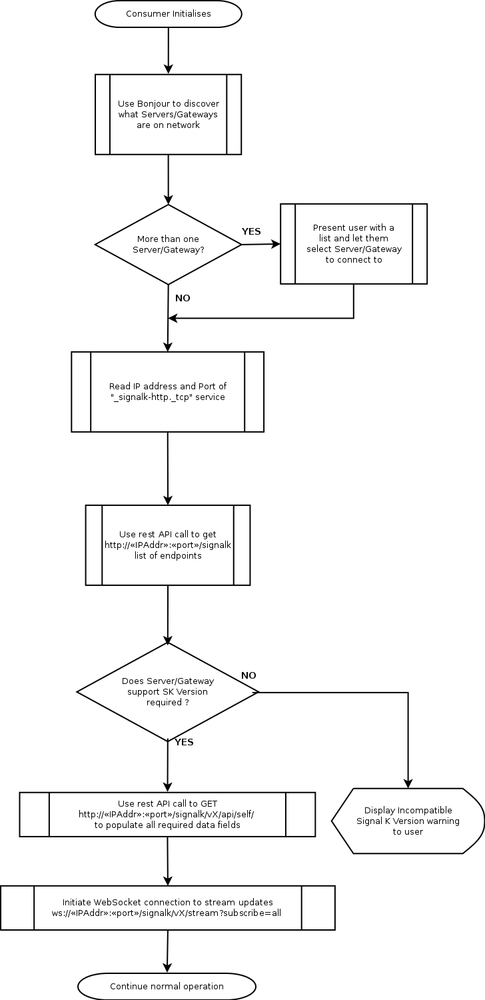

Discovery and Connection Establishment
Service Discovery
A Signal K server SHOULD advertise its services using DNS Service Discovery (DNS-SD) via Multicast DNS (mDNS); also known as Bonjour. The server MUST provide DNS Service (SRV) Records and Text (TXT) Records describing the Signal K interfaces it provides. These service identifiers are:
_http._tcpfor the server's web interface_signalk-http._tcpfor the Signal K REST API_signalk-ws._tcpfor the WebSocket data stream_signalk-tcp._tcpfor the TCP data stream
If a server is providing Signal K via secure versions of HTTP or WebSockets then they MUST be able to provide a redirection to the secure versions of these protocols.
If a Signal K server is using DNS-SD, it MUST provide the following parameters (key/value pairs) in the TXT record portion of the DNS-SD advertisement:
txtversis a US-ASCII decimal number identifying the version of the DNS-SD record. Currently, this MUST have a value of 1rolesspecifies which roles the server is capable of providing. See Roles below for details
The server MAY provide the following values:
selfis the unique identifier of the vessel using the URN format specified for theuuidfield in the Signal K schema. It may also use the URN format specified for themmsifield in the Signal K schema if it exists.swnameis the name of the Signal K server software, e.g. signalk-server-nodeswversis the version of the Signal K server software
swname, self amd roles MUST be the same values as provided by the name, self and roles properties within the Websocket hello message (if implemented).
An example DNS-SD record set is shown below.
Service data for service 'signalk-http' of type '_signalk-http._tcp' in domain 'local' on 4.0:
Host 10-1-1-40.local (10.1.1.40),
port 80,
TXT data: [
'txtvers=1',
'roles=master,main',
'self=vessels.urn:mrn:signalk:uuid:c0d79334-4e25-4245-8892-54e8ccc8021d',
'swname=signalk-server',
'swvers=0.1.23'
]
Service data for service 'signalk-ws' of type '_signalk-ws._tcp' in domain 'local' on 4.0:
Host 10-1-1-40.local (10.1.1.40),
port 3000,
TXT data: [
'txtvers=1',
'roles=master,main',
'self=urn:mrn:signalk:uuid:c0d79334-4e25-4245-8892-54e8ccc8021d',
'swname=signalk-server',
'swvers=0.1.23'
]
These records are advertising a Signal K server with the HTTP REST API on port 80 and the WebSocket data stream on port
3000. The server identifies as having the master and main roles and provides a self identifier as a UUID.
Roles
The four possible values for roles are master, slave, main, and aux. These are defined below.
Master
master is the canonical source for identity and configuration information for the entire vessel.
If there is only one master on the vessel, then it should also provide the main role. The combination of master and main informs a client that this server is actively providing identifying information.
Main and Aux
If there are more than one masters on the vessel, EXACTLY ONE server should advertise both master and main. All other masters should advertise master and aux. Clients should only use the master aux servers for identifying information if the master main is not available.
Any server identifying as master MUST be able to provide at a minimum the unique identifier (self) for the vessel.
Slave
Any server providing the slave role should retrieve identity and configuration information from the master server.
Slave servers MAY provide configuration and identity information for themselves, but this identity MUST NOT be
considered valid for the entire vesssel.
Main and Aux
The use of main and aux have not been defined for the slave role at this time.
Connection Establishment
Using the information above a web client or HTTP capable device can discover and connect to a Signal K server using the following process:
-
Query for Signal K services using mDNS
-
Connect to the host and port advertised as 'signalk-http' via HTTP (e.g.
http://10.1.1.40:80) -
Per the Urls and Ports section, make a GET request for
/signalkto retrieve a JSON object containing anendpointsJSON object -
Make further REST calls for more specific data, or open a websocket connection to start streaming updates.
